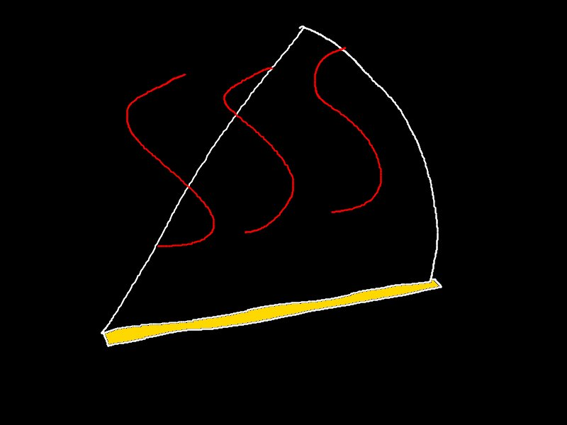

Spicy Quesadilla

Description
The Spicy Quesadilla is a simple quesadilla with spicy additions added to satisfy those with an adventurous taste!
Ingredients
- Flour tortillas (preferably uncooked)
- Your choice or cheese (mozarella or pepperjack are great options)
- Sliced pickled jalapenos
- HUY FONG Chili Garlic Sauce
- Sliced ham
Steps
- If using uncooked tortillas, cook one side
- Add your chosen amount of cheese to half of the cooked side of the tortilla and fold it
- Slice your ham into small pieces and add to the quesadilla
- Add jalapeno slices to your taste. If you want even more jalapeno flavor, feel free to add jalapeno juice from the can.
- Microwave the quesadilla for 30 seconds to partially melt the cheese
- Take the quesadilla out of the microwave and heat them on a pan on medium heat until golden brown
- Add HUY FONG Chili Garlic Sauce, either on the side as dip or spread across the surface of the quesadilla
- Enjoy!